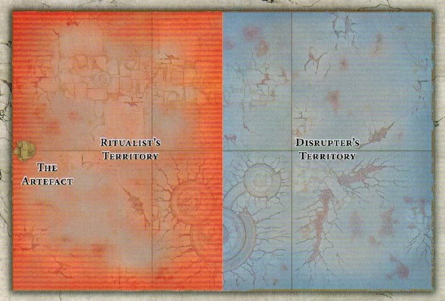

If both Artefact shattered and Ritual completed conditions are met, the player who achieved their condition last (or in the current turn) generally takes precedence for the 30VP. If it's truly simultaneous, consider it a Draw for that specific objective's VP.
Battleplan: The Ritual
An Age of Sigmar Narrative Mission
Across the Mortal Realms...
...the gods look on as their worshippers fight and die in their name. Should the correct rituals be performed, it will surely spell destruction for their foes. This battleplan pits two forces against each other in a desperate race against time to either complete or disrupt a potent arcane ritual!
The Armies
Each player selects an army of an agreed-upon points value (e.g., 1000 or 2000 points). Players then decide who will be the Ritualist and who will be the Disrupter. If one player's army has a significantly higher total points value (e.g., 25% more or more), that player must be the Disrupter. Otherwise, both players roll a D6, and the player who rolls higher chooses whether to be the Ritualist or the Disrupter.
Each General (or designated leader) has a unique Command Ability available to them, in addition to any others they may possess.
Objectives
Ritualist's Objectives
You are on the verge of completing a powerful ritual to achieve your destiny. Your primary goal is to **complete the ritual (see 'The Ritual' rule below)**. You must fight through the enemy to protect the Artefact and finish what you started!
Disrupter's Objectives
Your mighty warhost is tasked with preventing a hated foe from completing a dire ritual. Your primary goal is to **Shatter the Artefact (see 'Shatter the Artefact' Command Ability below)**. Fight your way past the Ritualist's forces and destroy the focus of their ceremony!
The Battlefield & Setup
The battle takes place near an ancient, tainted artefact. A suitable piece of Terrain (e.g., a Baleful Realmgate, large statue, or arcane device) is placed anywhere in the Ritualist's territory to represent the Artefact. No model may move through this terrain feature.
Generate the rest of the scenery for this battle using the current Warhammer: Age of Sigmar Core Rules for Battle Scenery and Terrain Features.
Set-Up
Do not use the standard set-up instructions from the Core Rules. Instead, players take turns setting up units one at a time, starting with the player who deployed first. Your territory is defined by the map below. Units must be set up wholly within your own territory and more than 9" from enemy territory. No model may deploy within 3" of the Artefact.
First Turn
In the first battle round, the **Disrupter decides who will take the first turn.** (This overrides the standard roll-off for priority in the first battle round).
Battleplan Map
Map Overview: The battlefield is divided into two main territories. The Ritualist's territory (often red/orange) and the Disrupter's territory (often blue/grey). The Artefact is placed centrally, marking the heart of the conflict.
Scoring Victory Points
This battle lasts for 5 Battle Rounds. Each player should keep track of their Victory Points (VP) throughout the game. The player with the most VP at the end of Battle Round 5 wins!
1. Battleplan Objectives (Score at the end of each Battle Round)
- Ritualist's Progress: If the Artefact is wholly within the Ritualist's territory and is uncontested, the Ritualist scores 3 Victory Points.
- Ritualist's Protection: If the Ritualist's General is wholly within 12" of the Artefact, the Ritualist scores 2 Victory Points.
- Disrupter's Pressure: If the Artefact is contested (i.e., within 3" of at least one Disrupter unit AND at least one Ritualist unit), the Disrupter scores 3 Victory Points.
- Disrupter's Advance: If the Disrupter's General is wholly within 12" of the Artefact, the Disrupter scores 2 Victory Points.
2. End-Game Victory Points (Score at the end of Battle Round 5)
- Ritual Completed! (Ritualist): If the cumulative total of all Ritual rolls is 20 or more, the Ritualist scores an additional 30 Victory Points.
- Artefact Shattered! (Disrupter): If the Artefact was shattered by the Disrupter's Command Ability, the Disrupter scores an additional 30 Victory Points.
- Slay the Leadership: The player who slays the opposing player's General (original or any replacement) scores an additional 10 Victory Points.
- Control the Scene: The player who controls the Artefact (has more models within 3" of it) at the end of Battle Round 5 scores an additional 5 Victory Points.
Players also score Victory Points from their chosen Battle Tactics and Grand Strategies as per the Warhammer: Age of Sigmar Core Rules.
Special Rules for The Ritual
Ritualist's Command Ability: Destroy At All Costs
Your General can use this Command Ability in your **Command Phase**. Pick D3 friendly units from your army that are wholly within 12" of this General. Until the **end of the current battle round**, add 1 to the Hit rolls and subtract 1 from the Save rolls made for these units. This Command Ability can only be used once per battle.
Disrupter's Command Ability: Shatter the Artefact
Your General (or the designated Second in Command, see below) can use this Command Ability in your **Command Phase**. If they are within 3" of the Artefact terrain feature, roll a D6. On a roll of 2+, the Artefact is shattered. If the Artefact is shattered, the **Disrupter scores an additional 30 Victory Points** at the end of Battle Round 5.
Second in Command
If the Disrupter's General is slain, they can immediately pick a friendly **HERO** to take their place as the General for the rest of the battle. This replacement can only happen once. If this replacement General is also slain (or if no other HERO is available to replace the original General), then the **Ritualist scores an additional 30 Victory Points** at the end of Battle Round 5.
The Ritual
The Ritualist rolls a D6 in each of their **Hero Phases**. Add 1 to the roll for each friendly **WIZARD** or **PRIEST** wholly within 12" of the Artefact. Subtract 1 from the roll for each enemy **WIZARD** or **PRIEST** wholly within 36" of the Artefact. The roll cannot be increased beyond 6 or reduced to less than 1. Keep a note of the cumulative sum of these rolls. This cumulative total is used for the 'Ritual Completed!' End-Game Victory Point condition.
Balance Tips & Resources
- For a balanced game, ensure both armies are built to the same agreed-upon points value (e.g., 1000pts, 2000pts).
- Consider the impact of the unique Command Abilities when building your army lists.
- The Disrupter wants to get to the Artefact quickly; the Ritualist wants to control the centre and screen.
- PDF Rules:
Quick tactics: use your General's unique Command Ability at the opportune moment!
Quick FAQ & Clarifications
As per the 'Second in Command' rule, if the Disrupter's General is slain and there are no other eligible HERO units to become the new General, the Ritualist scores an additional 30 Victory Points at the end of Battle Round 5.
Yes, the Artefact is a piece of Impassable scenery that models cannot move through, but models can be in base contact with it or in its zone (if it has one). Units can fight or shoot at units near/on the Artefact as normal.
Players choose these from the current Core Rules. They provide additional VP. Aim to complete these alongside the battleplan's specific objectives!